ACTE Research Team Equipe de recherche
The team leads researches on methods and tools to acquire georeferenced data, geometrically structured and radiometrically corrrected. These researches integrate conception and realization of innovative instruments, calibration of these instruments, indexing, localizing the acquired data and matching it with data of the same or different type. The team also investigates electromagnetic modelization of the signal allowing its physical interpretation, and tackles the problem of geometric structuration and semantization of the data. The team is interested in three main acquisition modalities (image, Lidar, Radar) whatever the point of view: satellite, aerial, drone, terrestrial (mobile and fixed, indoor and outdoor).
Les recherches de l'équipe s'intéressent à l'ensemble des méthodes et outils permettant d'acquérir des données géoréférencées, structurées géométriquement et corrigées radiométriquement. Ces recherches intègrent la conception et la réalisation d'instruments innovants, la calibration de ces instruments, les problématiques de localisation et d'appariement, la modélisation électromagnétique du signal permettant d'interpréter physiquement les données, les problématiques de structuration géométrique et de sémantisation. L'équipe s'intéresse aux trois principales modalités d'acquisition de données physiques (image, Lidar, Radar) quel que soit le point de vue (satellite, aérien, drone, terrestre mobile et fixe, intérieur et extérieur).
Keywords: data acquisition, instrumentation, physical sensors, capteurs physiques, geometry processing, radiometry, metrology, calibration, (geo)localization, content indexing, matching, descriptors, surface and structured reconstruction
Mots clef : acquisition, instrumentation, capteurs physiques, géométrie radiométrie, métrologie, étalonnage, (géo)localisation, descripteurs, structuration géométrique, appariement, indexation par contenu
Responsable de l'équipe: Bruno Vallet
Head of the team: Bruno Vallet
Staff
Membres
Permanent staff:
Membres permanents:
- Laurent Caraffa, CR MTES
- Pierre-Louis Frison, MCF HDR
- Bénédicte Fruneau, MCF HDR
- Valérie Gouet-Brunet, DR MTES
- Manchun Lei, CR MTES
- Olivier Martin, Ingénieur
- Christophe Meynard, Ingénieur
- Jean-Michael Muller, Ingénieur
- Quoc-Dinh Nguyen, Ingénieur
- Jean-Pierre Papelard, Ingénieur
- Marc Pierrot-Deseilligny, DR MTES
- Martyna Poreba, CR MTES
- Jean-Paul Rudant, Pr Emerite
- Ewelina Rupnik, CR MTES
- Jean-Philippe Souchon, Ingénieur
- Christian Thom, DR IGN
- Bruno Vallet, CR IGN HDR
Temporary staff:
CDD:
- Marie Ballere , doctorante
- Mohamed Boussaha, doctorant
- Imane Fikri, doctorante
- Dimitri Gominski, doctorant
- Stéphane Guinard, doctorant
- Kamel Guissous, doctorant
- Amire Khouas , doctorante
- Mailys Lopes , post-doctorante
- Nathan Piasco, doctorant
- Pierre Rolin, post-doctorant
- Imane Salhi, doctorante
- Raphael Sulzer, doctorant
- Teng Wu, post-doctorant
Alumni:
Anciens:
- Yann Le Borgne, Technicien d'études
- Nathan Piasco, doctorant
- Pierre Rolin, post-doctorant
- Ali Seba, post-doctorant
- Yilin Zhou , doctorante
Research topics
Sujets de recherche
TODO
Les recherches de l'équipe s'intéressent à l'ensemble des méthodes et outils permettant d'acquérir des données géoréférencées, structurées géométriquement et corrigées radiométriquement. Ces recherches intègrent la conception et la réalisation d'instruments innovants, la calibration de ces instruments, les problématiques de localisation et d'appariement, la modélisation électromagnétique du signal permettant d'interpréter physiquement les données, les problématiques de structuration géométrique et de sémantisation. L'équipe s'intéresse aux trois principales modalités d'acquisition de données physiques (image, Lidar, Radar) quel que soit le point de vue (satellite, aérien, drone, terrestre mobile et fixe, intérieur et extérieur).
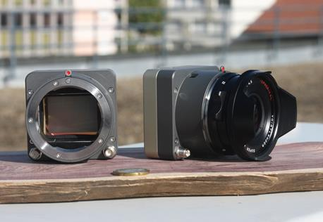 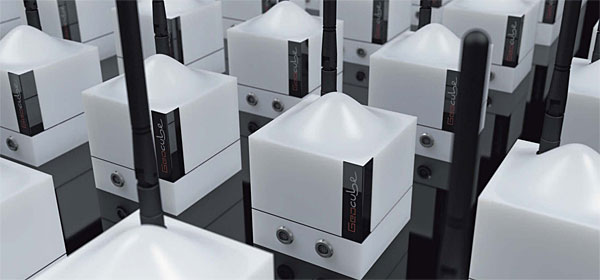
TODO
En terme instrumental, l'équipe travaille à la conception, réalisation et calibration d'instruments nouveaux pour l'acquisition de données métrologiques permettant de répondre à des questions/verrous scientifiques non pris en compte par les systèmes existants. Ces travaux, qui intègrent recherche et innovation, vont de la conception initiale jusqu'au développement de prototypes utilisables par des spécialistes.
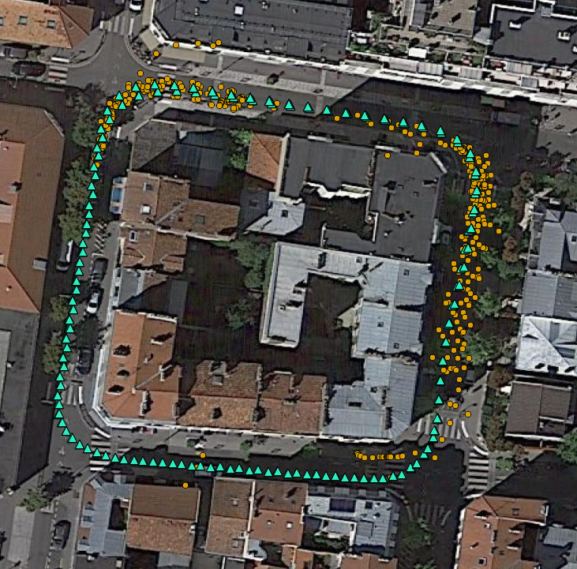 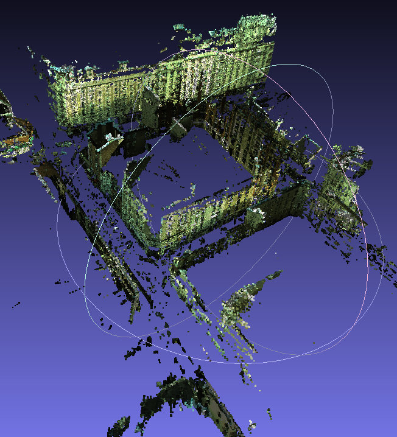 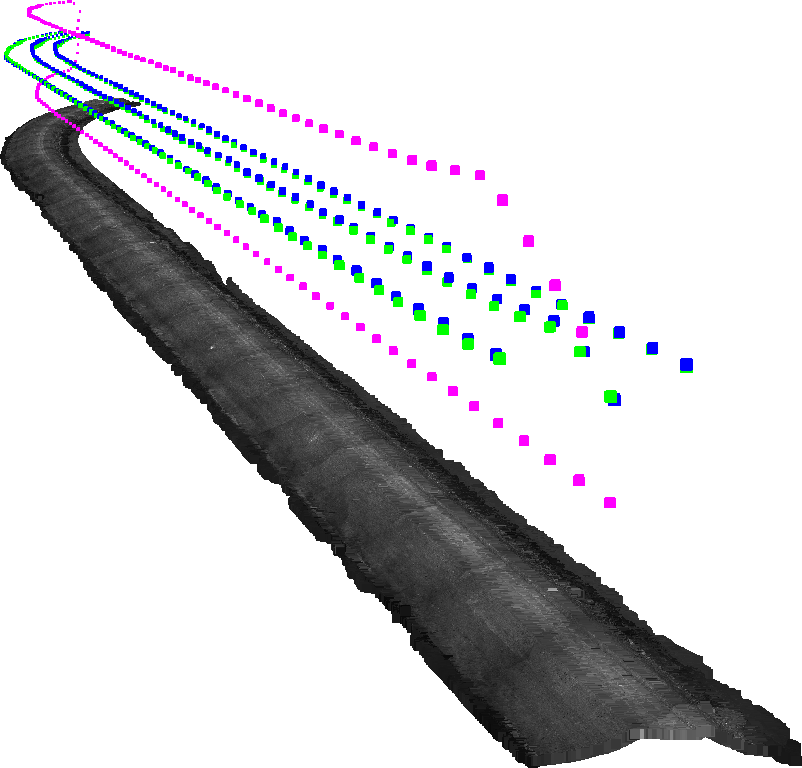 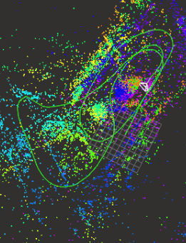
TODO
La valeur des données géographiques vient de leur localisation et de leur interopérabilité (entre elles et avec d'autres sources données). L'appariement de données, au sens le plus large, est une des étapes clé pour atteindre ces objectifs. L'équipe développe des recherches sur un vaste spectre de méthodes d'appariement pour faire progresser l'état de l'art et le rendre plus précis, plus robuste, plus général. Ces recherches portent potentiellement sur toutes les modalités (image, Lidar, Radar) et leur croisement, tous les points de vue (satellitaire, aérien, drone, routier, terrestre intérieur et extérieur), toutes les échelles et toutes les temporalités (données anciennes jusqu'à actuelles). Le spectre méthodologique des recherches de l'équipe en appariement couvre notamment l'extraction de primitives, l'appariement éparse de ces primitives, l'appariement dense (photogrammétrique) de données localisées pour générer des modélisation 3D, l'appariement 2D (optique et radar) pour le calcul de déformations, l'appariement avec des bases de données, l'indexation de contenu pour la fouille dans des grandes bases de données images (notamment historiques).
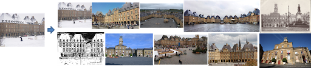
TODO
L'interprétation du signal reçu en terme d'information sur la physique de la scène nécessite une modélisation fine du capteur et des phénomènes électromagnétiques. L'équipe mène des recherches dans ce domaine sur 2 aspects :
-
TODO
l'analyse de données radar: l'objectif est de mieux comprendre la sensibilité de ces données avec les paramètres de surface (humidité et rugosité des sols, humidité, structure, et quantité de biomasse de la végétation, déplacement de surface, pentes) afin de pouvoir en extraire des estimations quantitatives ou des classes homogènes à l'échelle des paysages. Il s'agit notamment d'étudier la complémentarité des différentes données radar satellitaires en terme de longueur d'onde, polarisations, résolutions spatiale et temporelle.
-
TODO
l'estimation de réflectance est une entrée pour estimer les matériaux constitutifs des scènes imagées, elle est abordée comme un problème inverse permettant de remonter à des propriétés optiques des matériaux indépendamment des conditions d'observation (géométrie d'acquisition, condition d'illumination ou de transmission atmosphérique).
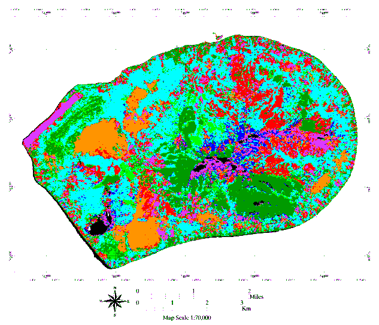 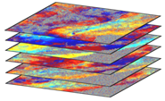 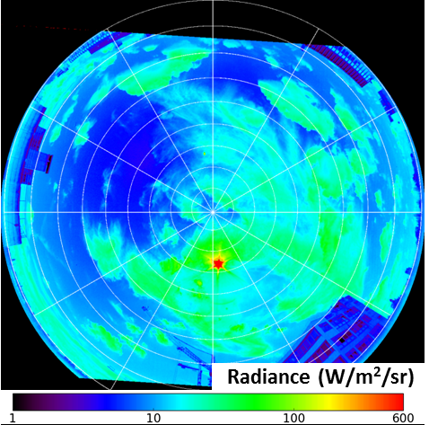
TODO
Une fois les données géoréférencées, calibrées, et mises en 3D, des méthodes de structuration et d'extraction d'information doivent être utilisées pour les enrichir et les rendre plus compactes et plus maniables. Les questions de recherche sont de traiter des jeux de données de plus en plus massifs, de qualifier les données transformées (estimation d'incertitude) et, bien sûr, d'améliorer la qualité des résultats (notamment pour la radiométrie et la sémantisation). Les aspect abordés par l'équipe incluent:
-
3D (mesh) surface reconstruction
la reconstruction de surface (en particulier triangulées) 3D
-
Structured 3D reconstruction including semantisation and levels of detail (from point cloud to geographic objects such as buildings, sidewalks, trees,...)
la reconstruction structurée incluant une sémantisation et potentiellement une hiérarchisation (on passe d'un nuage de points à des objets géographiques, bâtiments, trottoirs, arbres…)
-
Surface texturing
la texturation des surfaces
-
Change detection
la détection de changements
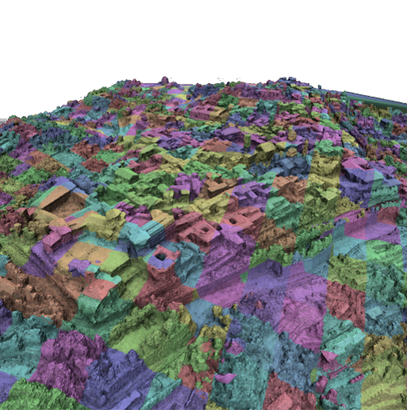 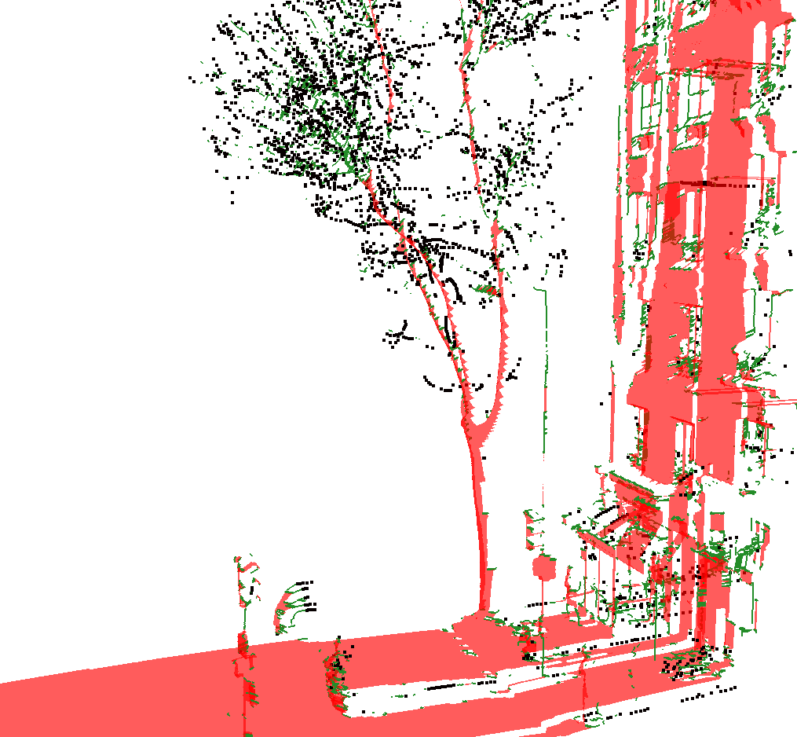 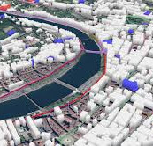 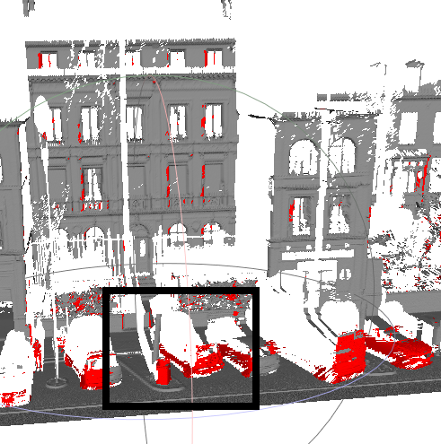
News
Actualités
-
08/11/19: Miloud Mezian's PhD
08/11/19: Thèse de Miloud Mezian
ACTE PhD student Miloud Mezian defends his PhD thesis
Miloud Mezian, doctorant de l'équipe ACTE, soutiens sa thèse
-
06/12/19: Yilin Zhang's PhD
06/12/19: Thèse de Yilin Zhang
ACTE PhD student Yilin Zhou defends her PhD thesis
Yilin Zhang, doctorante de l'équipe ACTE, soutiens sa thèse
-
17/01/20: ANR BIOM project meeting
17/01/20: Réunion de projet ANR BIOM
-
13-16/01/20: TRB 2020
Participation at and speech on "Creating digital twins of cities: from data acquisition to 3D modeling" at the 2020 Transportation Research Board (TRB) Annual Meeting
Participation et présentation donnée sur le thème "Creating digital twins of cities: from data acquisition to 3D modeling" à la réunion annuelle 2020 du Transportation Research Board (TRB)
Publications
Projects
Platinum
Long term 3D cartography for localization
BIOM
Building Inside/Outside Modeling
TimeMachine
Big Data of the Past
Volta
innoVation in geOspatiaL and 3D daTA